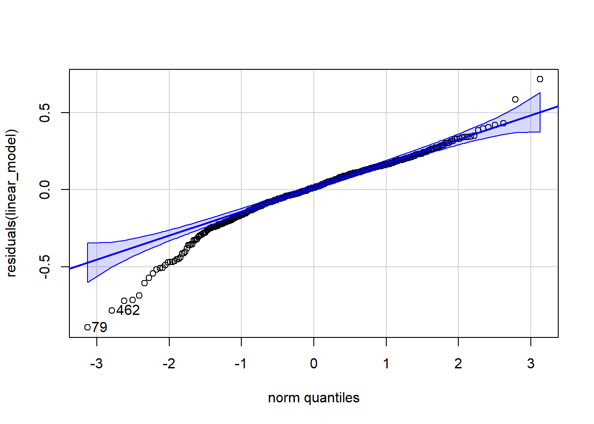

'data.frame': 569 obs. of 33 variables:
$ id : int 842302 842517 84300903 84348301 84358402 843786 844359 84458202 844981 84501001 ...
$ diagnosis : chr "M" "M" "M" "M" ...
$ radius_mean : num 18 20.6 19.7 11.4 20.3 ...
$ texture_mean : num 10.4 17.8 21.2 20.4 14.3 ...
$ perimeter_mean : num 122.8 132.9 130 77.6 135.1 ...
$ area_mean : num 1001 1326 1203 386 1297 ...
$ smoothness_mean : num 0.1184 0.0847 0.1096 0.1425 0.1003 ...
$ compactness_mean : num 0.2776 0.0786 0.1599 0.2839 0.1328 ...
$ concavity_mean : num 0.3001 0.0869 0.1974 0.2414 0.198 ...
$ concave.points_mean : num 0.1471 0.0702 0.1279 0.1052 0.1043 ...
$ symmetry_mean : num 0.242 0.181 0.207 0.26 0.181 ...
$ fractal_dimension_mean : num 0.0787 0.0567 0.06 0.0974 0.0588 ...
$ radius_se : num 1.095 0.543 0.746 0.496 0.757 ...
$ texture_se : num 0.905 0.734 0.787 1.156 0.781 ...
$ perimeter_se : num 8.59 3.4 4.58 3.44 5.44 ...
$ area_se : num 153.4 74.1 94 27.2 94.4 ...
$ smoothness_se : num 0.0064 0.00522 0.00615 0.00911 0.01149 ...
$ compactness_se : num 0.049 0.0131 0.0401 0.0746 0.0246 ...
$ concavity_se : num 0.0537 0.0186 0.0383 0.0566 0.0569 ...
$ concave.points_se : num 0.0159 0.0134 0.0206 0.0187 0.0188 ...
$ symmetry_se : num 0.03 0.0139 0.0225 0.0596 0.0176 ...
$ fractal_dimension_se : num 0.00619 0.00353 0.00457 0.00921 0.00511 ...
$ radius_worst : num 25.4 25 23.6 14.9 22.5 ...
$ texture_worst : num 17.3 23.4 25.5 26.5 16.7 ...
$ perimeter_worst : num 184.6 158.8 152.5 98.9 152.2 ...
$ area_worst : num 2019 1956 1709 568 1575 ...
$ smoothness_worst : num 0.162 0.124 0.144 0.21 0.137 ...
$ compactness_worst : num 0.666 0.187 0.424 0.866 0.205 ...
$ concavity_worst : num 0.712 0.242 0.45 0.687 0.4 ...
$ concave.points_worst : num 0.265 0.186 0.243 0.258 0.163 ...
$ symmetry_worst : num 0.46 0.275 0.361 0.664 0.236 ...
$ fractal_dimension_worst: num 0.1189 0.089 0.0876 0.173 0.0768 ...
$ X : logi NA NA NA NA NA NA ...
В колонке diagnosis содержится информация об опухоли (M = злокачественная, B = доброкачественная).
Задание 1 (2 балла)
Создайте регрессионную модель, которая бы описывала связь среднего радиуса опухоли и средней площади (а), среднего периметра (б), средней симметричности (в).
Постройте графики, на которых отразите регрессионную прямую, и прокомментируйте свои находки.
Call:
lm(formula = radius_mean ~ area_mean + perimeter_mean + symmetry_mean,
data = breast_cancer_data)
Residuals:
Min 1Q Median 3Q Max
-0.89375 -0.08980 0.01347 0.12073 0.71670
Coefficients:
Estimate Std. Error t value Pr(>|t|)
(Intercept) 2.0101598 0.1014135 19.82 < 2e-16 ***
area_mean 0.0007378 0.0001405 5.25 2.16e-07 ***
perimeter_mean 0.1350754 0.0020466 66.00 < 2e-16 ***
symmetry_mean -4.3541675 0.3004459 -14.49 < 2e-16 ***
---
Signif. codes: 0 '***' 0.001 '**' 0.01 '*' 0.05 '.' 0.1 ' ' 1
Residual standard error: 0.1898 on 565 degrees of freedom
Multiple R-squared: 0.9971, Adjusted R-squared: 0.9971
F-statistic: 6.511e+04 on 3 and 565 DF, p-value: < 2.2e-16
Результаты модели:
Остатки имеют конкретные минимальные, максимальные значения, медиану и интерквартильный размах.
Коэффициенты модели: увеличение средней площади и периметра повышает радиус на 0.0007 и 0.135, увеличение симметрии уменьшает радиус на 4.35.
Интерсепт указывает радиус при нулевых факторах.
Все p-value меньше 0.05, зависимость статистически значима.
F-статистика модели: 6.511e+04.
Общее p-value модели: < 2.2e-16.
Остаточная стандартная ошибка: 0.1898.
Adjusted R-squared: 0.9971, указывает на 99.7% предсказуемость модели, нужно проверить на переобучение.
Нужно проверить линейность зависимости факторов.
breast_cancer_data %>%ggplot(aes(x = area_mean, y = radius_mean)) +geom_point() +geom_smooth(method ="lm") +labs(title ="Зависимость среднего радиуса и средней площади опухоли",x ="Средняя площадь опухоли",y ="Средний радиус опухоли")
`geom_smooth()` using formula = 'y ~ x'
breast_cancer_data %>%ggplot(aes(x = perimeter_mean, y = radius_mean)) +geom_point() +geom_smooth(method ="lm") +labs(title ="Зависимость среднего радиуса и среднего периметра опухоли",x ="Средний периметр опухоли",y ="Средний радиус опухоли")
`geom_smooth()` using formula = 'y ~ x'
breast_cancer_data %>%ggplot(aes(x = perimeter_mean, y = radius_mean)) +geom_point() +geom_smooth(method ="lm") +labs(title ="Зависимость среднего радиуса и среднего периметра опухоли",x ="Средний периметр опухоли",y ="Средний радиус опухоли")
`geom_smooth()` using formula = 'y ~ x'
Все факторы линейно связаны с радиусом опухоли.
Остатки распределены нормально.
qqPlot(residuals(linear_model))

[1] 79 462
shapiro.test(residuals(linear_model))
Shapiro-Wilk normality test
data: residuals(linear_model)
W = 0.95781, p-value = 1.072e-11
На графике большая часть остатков находится в пределах интервалов, но в левой части графика наблюдаются значительные отклонения.
Тест Шапиро-Уилка отвергает нормальность распределения остатков (p-value = 1.072e-11).
Остатки гомоскедастичны.
plot(linear_model, which =1)
Остатки распределены неравномерно; требуются статистические тесты для точной оценки.
Необходимо проверить независимые переменные на отсутствие мультиколлинеарности.
Следует построить графики попарного распределения независимых переменных.
breast_cancer_data %>%ggplot(aes(x = area_mean, y = perimeter_mean)) +geom_point() +labs(title ="Зависимость средней площади и среднего периметра опухоли",x ="Средняя площадь опухоли",y ="Средний периметр опухоли")
breast_cancer_data %>%ggplot(aes(x = area_mean, y = symmetry_mean)) +geom_point() +labs(title ="Зависимость средней площади и средней симметричности опухоли",x ="Средняя площадь опухоли",y ="Средняя симметричность опухоли")
breast_cancer_data %>%ggplot(aes(x = perimeter_mean, y = symmetry_mean)) +geom_point() +labs(title ="Зависимость среднего периметра и средней симметричности опухоли",x ="Средний периметр опухоли",y ="Средняя симметричность опухоли")
График показывает сильную линейную зависимость между средней площадью и средним периметром, указывая на мультиколлинеарность, что негативно влияет на модель. Рекомендуется исключить один из признаков, например, средний периметр.
Из-за гетероскедастичности рассмотреть трансформацию зависимой переменной или использование взвешенной регрессии.
Данные независимы, что соответствует требованиям линейной регрессии.
Задание 2 (2 балла)
Пусть колонка с диагнозом принимает следующие значения: злокачественная опухоль — 1, а доброкачественная — 0. Постройте модель, которая бы прогнозировала вероятность возникновения злокачественной опухоли от среднего радиуса (а), средней площади (б), средней текстуры (в).
Постройте графики. Создайте модель, которая бы прогнозировала вероятность возникновения злокачественной опухоли от всех трех перечисленных факторов.
Логистическая регрессия подходит для бинарной зависимой переменной. Наблюдения независимы.
logistic_model <-glm(diagnosis_binary ~ radius_mean + area_mean + texture_mean, data = breast_cancer_data, family ="binomial")summary(logistic_model)
Call:
glm(formula = diagnosis_binary ~ radius_mean + area_mean + texture_mean,
family = "binomial", data = breast_cancer_data)
Coefficients:
Estimate Std. Error z value Pr(>|z|)
(Intercept) -9.48796 6.88503 -1.378 0.168
radius_mean -0.38523 0.95524 -0.403 0.687
area_mean 0.01636 0.01100 1.487 0.137
texture_mean 0.20917 0.03714 5.632 1.78e-08 ***
---
Signif. codes: 0 '***' 0.001 '**' 0.01 '*' 0.05 '.' 0.1 ' ' 1
(Dispersion parameter for binomial family taken to be 1)
Null deviance: 751.44 on 568 degrees of freedom
Residual deviance: 288.81 on 565 degrees of freedom
AIC: 296.81
Number of Fisher Scoring iterations: 7
Интерпретация результатов логистической регрессии:
Интерсепт отражает логарифм шансов наличия доброкачественной опухоли при нулевых предикторах. Отрицательное значение интерсепта говорит о более высокой вероятности злокачественной опухоли при этих условиях.
Увеличение среднего радиуса снижает шансы на диагностирование доброкачественной опухоли, увеличивая вероятность злокачественной.
Средняя площадь и текстура опухоли положительно связаны с шансом диагностирования доброкачественной опухоли.
p-value для среднего радиуса и средней площади выше 0.05, что делает их статистически незначимыми. Текстура опухоли со значением p-value меньше 0.05 статистически значима.
Остаточное отклонение: 288.81 при 565 степенях свободы.
Нулевое отклонение: 751.44 при 565 степенях свободы.
Для улучшения интерпретации коэффициентов модели требуется преобразование.
Исходя из статистической значимости предикторов, можем утверждать, что текстура опухоли влияет на тип опухоли и при диагностировании доброкачественной опухоли этот признак будет в среднем на 1.23 раза выше, что является статистически достоверным. Для других факторов статистическая значимость не подтверждена.
Логистическая регрессия предполагает:
Отсутствие мультиколлинеарности между факторами.
Линейную связь между логитом зависимой переменной и факторами.
Отсутствие экстремальных выбросов.
Эти допущения в данном анализе не рассматриваются.
breast_cancer_data %>%ggplot(aes(x = radius_mean, y = diagnosis_binary)) +geom_point() +geom_smooth(method ="glm", method.args =list(family ="binomial")) +labs(title ="Зависимость типа опухоли от среднего радиуса опухоли",x ="Средний радиус опухоли",y ="Тип опухоли")
`geom_smooth()` using formula = 'y ~ x'
breast_cancer_data %>%ggplot(aes(x = area_mean, y = diagnosis_binary)) +geom_point() +geom_smooth(method ="glm", method.args =list(family ="binomial")) +labs(title ="Зависимость типа опухоли от средней площади опухоли",x ="Средняя площадь опухоли",y ="Тип опухоли")
`geom_smooth()` using formula = 'y ~ x'
breast_cancer_data %>%ggplot(aes(x = texture_mean, y = diagnosis_binary)) +geom_point() +geom_smooth(method ="glm", method.args =list(family ="binomial")) +labs(title ="Зависимость типа опухоли от средней текстуры опухоли",x ="Средняя текстура опухоли",y ="Тип опухоли")
`geom_smooth()` using formula = 'y ~ x'
Логистическая модель прогнозирует вероятность злокачественной опухоли на основе трех факторов.
ph.ecog: шкала опросника ECOG (оценку проводит врач). 0 = отсутствие симптомов, 1= симптомы есть, но пациент наблюдается амбулаторно, 2 = меньше половины дня пациент вынужден проводить в постели, 3 = больше половины дня нуждается в отдыхе лежа, но не прикован к постели, 4 = прикован к постели;
ph.karno: шкала Карновского (от 0 до 100, от худшего к лучшему) по оценке врача;
pat.karno: шкала Карновского (от 0 до 100, от худшего к лучшему) по оценке пациента;
meal.cal: калории потребляемой пищи;
wt.loss: потеря веса за последние полгода.
Создайте переменную event, в которой отразите наличие или отсутствие (1 или 0) интересующего события — смерти пациента.
Изучите работу функций Surv(), survfit() и ggsurvplot():
Постройте кривые выживаемости в зависимости от пола (на одном графике должны получиться две кривые для каждого пола и таблица числа пациентов, подверженных риску (at risk) под ним). Поясните получившееся значение p-value для лог-рангового теста и опишите наблюдаемые результаты.
Warning in geom_segment(aes(x = 0, y = max(y2), xend = max(x1), yend = max(y2)), : All aesthetics have length 1, but the data has 2 rows.
ℹ Did you mean to use `annotate()`?
All aesthetics have length 1, but the data has 2 rows.
ℹ Did you mean to use `annotate()`?
All aesthetics have length 1, but the data has 2 rows.
ℹ Did you mean to use `annotate()`?
All aesthetics have length 1, but the data has 2 rows.
ℹ Did you mean to use `annotate()`?
График кривых выживаемости показывает изменение доли выживших со временем. Пересечение доверительных интервалов и линий графика двух групп может указывать на отсутствие значимых различий в выживаемости между полами.
Уровень значимости установлен в 0.05.
Гипотезы:
H0: Нет разницы в выживаемости между группами.
H1: Есть разница в выживаемости между группами по полу.
survdiff(Surv(time, status) ~ sex, data = lung_filtered)
Call:
survdiff(formula = Surv(time, status) ~ sex, data = lung_filtered)
N Observed Expected (O-E)^2/E (O-E)^2/V
sex=1 112 112 102.8 0.824 2.24
sex=2 53 53 62.2 1.362 2.24
Chisq= 2.2 on 1 degrees of freedom, p= 0.1
На таблице представлены две группы, разделённые по полу. В колонке N указано количество людей, а в колонках Observed и Expected — наблюдаемые и ожидаемые события соответственно.
P-value равно 0.1, что больше установленного уровня значимости (alpha = 0.05), следовательно, нулевая гипотеза о отсутствии разницы в выживаемости между группами принимается.
Для анализа рисков по полу нужно построить график кумулятивной функции рисков и проинтерпретировать его.
ggsurvplot(survival_fit, fun ="cumhaz", conf.int =TRUE, risk.table =TRUE)
График кумулятивной функции рисков отображает риск целевых событий во времени. Пересечение доверительных интервалов и линий графика указывает на возможное отсутствие значимых различий в уровне риска между группами, разделенными по полу.
С помощью функции coxph() постройте регрессию Кокса и оцените влияние пола на выживаемость. Что вы можете сказать о полученных результатах?
cox <-coxph(Surv(time, status) ~ sex, data = lung_filtered)summary(cox)
Call:
coxph(formula = Surv(time, status) ~ sex, data = lung_filtered)
n= 165, number of events= 165
coef exp(coef) se(coef) z Pr(>|z|)
sex -0.2511 0.7779 0.1683 -1.493 0.136
exp(coef) exp(-coef) lower .95 upper .95
sex 0.7779 1.285 0.5594 1.082
Concordance= 0.543 (se = 0.021 )
Likelihood ratio test= 2.29 on 1 df, p=0.1
Wald test = 2.23 on 1 df, p=0.1
Score (logrank) test = 2.24 on 1 df, p=0.1
P-value составляет 0.136, что больше уровня значимости (alpha = 0.05), указывая на отсутствие статистически значимой разницы между группами по полу.
Относительный риск между двумя группами равен 0.7779, согласно экспоненте коэффициента.
(1-0.7779) *100
[1] 22.21
(1-1.285) *100
[1] -28.5
Риск смерти у женщин на 22.21% ниже, чем у мужчин, в то время как у мужчин он выше на 28.5%. Однако, согласно регрессии Кокса, эти различия не являются статистически значимыми (p-value > 0.05).
Тесты отношения правдоподобия (Likelihood ratio) и тест Вальда (Wald test) также не выявили статистически значимых различий.
Анализ был проведен только на пациентах, достигших целевого события, что является некорректным для оценки выживаемости и риска, поскольку не учитывает цензурированные данные. Несмотря на отсутствие статистически значимых различий в данном анализе, учет всех пациентов и цензурирования может показать другие результаты.